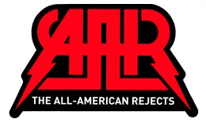

Home
About
Images

The All American Rejects
All American Rejects Albums Ranked
“It’s no secret that The All American Rejects make music that is both cohesive and fun. They have lyrics that deal with fun and relationships without (mostly, there are exceptions) cursing. They don’t have overtly explicit lyrics either. In fact, they’re never explicit. They manage to put it with music that while it is commercial, is really good and chocked full of talent. Now,
Image 1. Move Along
is still their best album to my ears, for a second ablum its a hard rocking sound,thier third album
Image 2. When the World Comes Down
continues in the vein of thier first album. There are strong drum beats provided by Chris Gaylor,some really good guitars performed by Nick and Mike, and Tyson sings wonderfully and gives us some bass action! Album 1 but third on my list
Image 3. All American Reject
This album consists entirely of songs with memorable hooks, up-tempo rhythms, melodic punk-pop choruses, and infectious lyrics. The album has been well-produced, enhancing the overall packaging of each song. More importantly, it’s remarkable that such a young band has demonstrated these sophisticated pop sensibilities in their songwriting. Thier last ablum and 4th on my list is
Image 4. Kids in the Street
the consistancy in the writing and composition is evident but i felt it just lacked the kick of thier previos albums. still an excellent ablum but one had to be last."